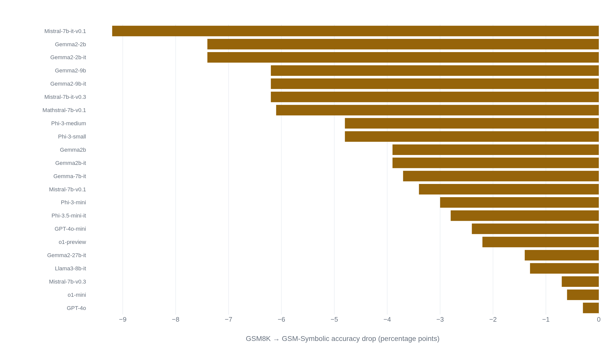

A passing contamination check on GSM8K would not catch a renamed problem
GSM8K's training set went into GPT-4's pretraining before the model scored 92 percent on the test, and a separate study shows that renaming a problem's numbers alone still moves a model's score.
Why this matters
A "GSM8K score" is one of the most repeated shorthand phrases in artificial intelligence. It appears in technical reports, product pages, and news coverage as a stand-in for one claim: that a model can work through multi-step arithmetic reasoning, not just recite facts. Almost nobody repeating the number can say what produced it.
GSM8K is the arithmetic-reasoning counterpart to two benchmarks this course has already covered. HumanEval measures how much of a fixed set of code problems a model's programs passed. MMLU measures how it scored on a fixed multiple-choice quiz. Both hid their own procedures. This lesson opens the same hood on the number that stands in for reasoning: what it is computed from, two separate checks that moved the same models' scores, and one primary source's own footnote on its own headline number.
- 01
- Hand-writing HumanEval's 164 problems solved contamination in 2021 and caused it by 2024: the same contamination story, told for a benchmark of code problems instead of word problems.
- 02
- The lab that ships an MMLU score rarely says how it was measured: the same lesson for a multiple-choice knowledge test, and how its own grading format moves a score.
The 8,500 problems and the one rule for scoring them
GSM8K is a set of 8,500 grade-school math word problems. Karl Cobbe and co-authors at OpenAI built it in 2021 to test whether a language model can work through arithmetic reasoning rather than recite it.1 The team split the set into 7,500 training problems and 1,000 held out for testing. Every problem takes between two and eight steps to solve, aimed at a bar a bright middle-school student could clear.1 Workers hired through Upwork and Surge AI wrote the problems by hand, rather than scraping a source whose solutions might already be indexed online.1 The authors found that 1.7 percent of problems still produced contractor disagreement, rounded in the paper to "less than 2 percent."1
Grading one of these problems is exact match: a model writes a full solution in plain language, and the check is whether its final number matches the one keyed for that problem.1 The paper's headline result compares two ways of running that check. A finetuned model samples one low-temperature solution and is scored right or wrong on the spot.1 A "verifier" instead samples many higher-temperature solutions, scores each with a separately trained grader, and keeps whichever solution that grader ranks highest, based only on whether the final answer was correct.1 On the full training set, a 6-billion-parameter model using the verifier method slightly outperformed a finetuned 175-billion-parameter model, a boost the paper likens to a 30-fold increase in model size.1 Neither model's percentage is printed in the paper's text, only unlabeled curves in its figures. Even the comparison that made GSM8K famous has no stated numbers in the paper that built it.
One ablation shows why the written solution matters: finetuning the 6-billion-parameter model to output only the final answer dropped its test accuracy from 20.6 percent to 5.2 percent.1 Exact match checks only the last number a model writes, but the score depends heavily on whether the model was trained to show its work first.
The 92 percent that shipped with a footnote
GSM8K's most quoted number is probably GPT-4's. OpenAI's 2023 report lists GPT-4 at 92.0 percent on GSM8K, five-shot chain-of-thought, against 57.1 percent for GPT-3.5.2 An asterisk on that 92.0 points to a footnote: "For GSM-8K, we include part of the training set in GPT-4's pre-training mix."2 The appendix explains the choice: OpenAI mixed data from GSM8K's own training set, and from a related benchmark called MATH, into the data GPT-4 learned from before it was ever tested.2 The same appendix reports a clean leak check, then adds an instruction most coverage leaves out: "We recommend interpreting the performance results reported for GPT-4 GSM-8K in Table 2 as something in-between true few-shot transfer and full benchmark-specific tuning."2
Meta made the opposite choice, and said so, citing OpenAI's report directly. Llama 3's developers write that they "do not include any training sets from commonly used benchmarks" in the model's late-stage training data, aiming to measure genuine few-shot learning rather than benchmark-tuned performance.3 The same report shows how much that policy choice can move a score on its own. A small amount of non-benchmark math data lifted a pretrained Llama 3 8B model's GSM8K score by 24.0 points. The gain nearly vanished at 405 billion parameters.3 Two frontier labs handled that relationship in opposite, disclosed ways. A bare "GSM8K: X percent" beside another lab's "GSM8K: Y percent" is not one procedure run twice. It can be two different procedures wearing the same label.
Anthropic's Claude 3 model card adds a cross-check, reprinting GPT-4's 92.0 and GPT-3.5's 57.1 next to its own three GSM8K scores, shown below.4 The reprinted figures match exactly, so headline numbers travel intact across documents. What does not travel, unless a reader opens an appendix, is each lab's training-data policy.
| Model | GSM8K score | Training-data disclosure |
|---|---|---|
| GPT-4 | 92.0% (5-shot) | Training set mixed into pretraining, disclosed in an appendix.2 |
| Claude 3 Opus | 95.0% (0-shot) | No disclosure in the model card.4 |
| Llama 3 8B | +24.0 pts from annealing | Annealing data excludes GSM8K's own training set.3 |
Rename the numbers, and the score still moves
In 2024, researchers at Apple built a second instrument to test what a GSM8K percentage measures. Their method, GSM-Symbolic, takes each problem's template and generates new versions by swapping only the names and numbers, leaving every required reasoning step exactly as it was.5 They generated 50 such versions per template and ran roughly 25 models against all of them.5 If a GSM8K percentage measured a stable capacity to do the reasoning a problem asks for, a model should score about the same across all 50 relabeled versions of the same problem.
It did not. Accuracy typically varied by about 15 percentage points across the 50 versions of a single template, from changing nothing but names and numbers.5 One documented case: Mathstral-7b-v0.1 scored 80.0 percent on the original GSM8K questions and 74.0 percent, give or take 3.5 points, on the relabeled versions of those same questions.5 The paper's own authors offer one explanation for the swing. On 21 of the 25 models tested, the pattern was consistent with some of GSM8K's original test problems having leaked into training, inflating scores on the exact wording those models had already seen.5

A second, sharper version added one clause to each relabeled problem, one that reads as relevant but changes nothing about how to solve it, calling the result GSM-NoOp.5 In one example, a problem asks how many kiwis someone picked over three days, then adds that five of them "were a bit smaller than average." Several models, including o1-mini and Llama3-8B, subtracted those five kiwis from the total, even though the question never asks about kiwi size.5 Across all tested models, GSM-NoOp produced what the researchers call a catastrophic decline: over 65 percent for the smallest model tested, Phi-3-mini, with "even stronger models such as o1-preview" also showing significant drops.5 One technology reporter covering the release restated the same 65-percent figure for readers who would never open the arXiv page.6
A twin test built where none of the models could have looked
A separate 2024 project attacked the same question differently: Scale AI built GSM1k, a fresh set of grade-school word problems matched to GSM8K on difficulty and on how often human test-takers solved each one.7 Every problem was written new, so no model could have seen it during training.7 Comparing GSM8K and GSM1k scores isolates something renaming cannot: whether a model has actually seen this problem's wording before, not just problems shaped like it.
The gap runs as high as 8 percentage points, the largest in the paper's own table, for a model called Yi-6B-Chat.7 Other named drops include 7.2 points for a fine-tuned Mistral variant and 6.3 for Phi-2.7 The paper also reports a modest positive relationship between memorization and gap size. It found a Spearman correlation of 0.36 between how likely a model was to generate GSM8K's own test text word for word, and how large its GSM8K-to-GSM1k gap turned out to be.7 Models that showed more sign of memorizing GSM8K tended to lose more ground on the unseen twin.
The paper builds in two guardrails against over-reading its own result. Phi-2's score fell 6.3 points moving to GSM1k, but it still solved more than half of GSM1k's problems, which it could not have memorized: a real drop coexists with real reasoning ability.7 The gap is not purely contamination either. Mixtral-8x22b and its instruction-tuned variant showed similar overfitting despite very different likelihoods of having generated GSM8K's exact text. That points to other causes, such as picking a checkpoint because it already scored well on GSM8K.7 One caveat cuts the other way: GSM1k is not perfectly matched to GSM8K's difficulty, and some models, especially Anthropic's Claude family, score better on the newer set, consistent with GSM1k running slightly easier.7 A negative gap is not, on its own, proof of zero overfitting.
The contamination check most labs actually run
GPT-4's report says OpenAI "conducted contamination checking to verify the test set for GSM-8K is not included in the training set."2 That kind of check is standard, usually run by matching strings: searching training data for close overlap with a test problem's exact wording.8 A 2023 paper from UC Berkeley and LMSYS tested how well that standard method holds up, using GSM8K as one of three benchmarks checked alongside MMLU and HumanEval.8 Their finding: rewording or translating a test problem is enough to slip past a string-matching check. Once that happens, a much smaller model can overfit to the reworded test data and score close to a model many times its size.8
None of this proves any particular lab's own contamination check failed. It shows that the standard method a check like OpenAI's typically runs would not catch a GSM8K test problem sitting in training data with its names and numbers changed. That is exactly the kind of change GSM-Symbolic showed still moves scores.58 A check that passes shows the exact wording was absent, not that a renamed twin was too.
The takeaway
A GSM8K percentage is a real measurement of one thing: how many of 1,000 fixed grade-school word problems a model answered correctly, under one prompt count and one training-data policy the reporting lab chose. It supports less than it is usually asked to support about reasoning. Rename the same problems' details and change nothing else, and the same models' scores swing by as much as 15 points. Add one irrelevant clause, and the collapse turns severe: over 65 percent for the weakest model tested. Test the same models against a freshly written twin of matched difficulty, guaranteed unseen, and GSM8K's own scores fall by as much as 8 points at the widest gap. That fall correlates, weakly, with how well a model can recite GSM8K's own wording. The contamination check most labs run to rule out a leaked test set would not catch one that had simply been reworded. A single "GSM8K: X percent" is worth three checks before it stands for reasoning. What training-data policy produced it. How far it moves when the same problems are renamed. How it holds up against a twin the model has never seen.
- 01
- Mirzadeh et al., "GSM-Symbolic" (2024): the full paper, with the complete ranked results across roughly 25 models.
- 02
- Melanie Mitchell, "The LLM Reasoning Debate Heats Up": a working researcher weighing GSM-Symbolic, GSM1k, and other reasoning studies against each other.
Sources
- Cobbe et al. · Training Verifiers to Solve Math Word Problems (2021)
- OpenAI · GPT-4 Technical Report (2023)
- Meta · The Llama 3 Herd of Models (2024)
- Anthropic · The Claude 3 Model Family: Opus, Sonnet, Haiku, Model Card (2024)
- Mirzadeh et al. · GSM-Symbolic: Understanding the Limitations of Mathematical Reasoning in Large Language Models (2024)
- Charles Martin, AppleInsider · Apple's study proves that LLM-based AI models are flawed because they cannot reason (2024)
- Zhang et al. · A Careful Examination of Large Language Model Performance on Grade School Arithmetic (2024)
- Yang et al. · Rethinking Benchmark and Contamination for Language Models with Rephrased Samples (2023)